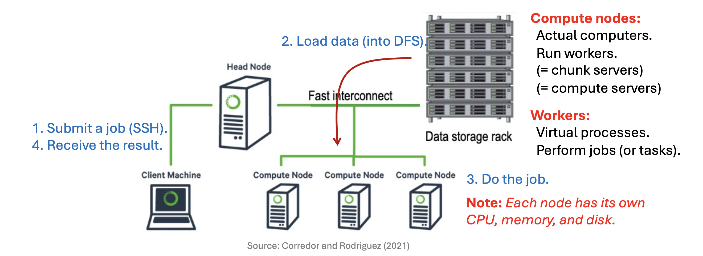
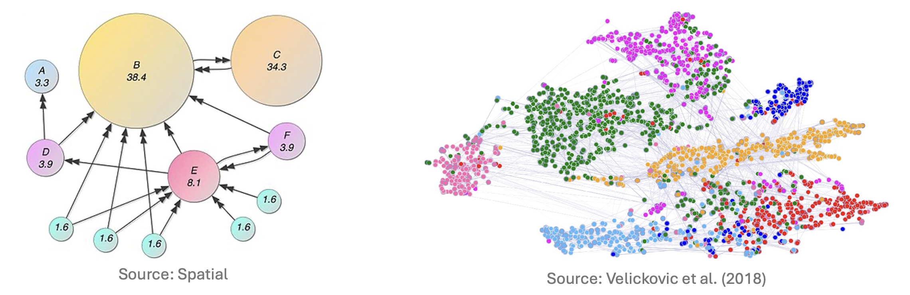

1. Introduction: The Need for Distributed Computing
현대 데이터 마이닝과 머신러닝에서 다루는 데이터의 규모는 단일 머신(Single Machine)의 처리 능력을 넘어선 지 오래입니다. 우리가 다루는 문제는 더 이상 단순한 스프레드시트 수준이 아니며, 거대한 그래프와 행렬 연산을 포함합니다.
강의에서는 대규모 연산이 필요한 대표적인 두 가지 예시를 제시합니다.
1.1. Web Ranking (PageRank)
- 웹 페이지의 중요도를 산정하는 PageRank 알고리즘은 웹을 거대한 그래프로, 링크를 행렬로 표현합니다.
- 규모: 수십억(Billions) 개의 웹 페이지(차원).
- 연산: \(M \times v\) 형태의 반복적인 행렬-벡터 곱(Iterated matrix-vector multiplication) 수행.
- 단일 메모리에 적재조차 불가능한 희소 행렬(Sparse Matrix)을 반복적으로 연산해야 합니다.
2. Physical Architecture of Large-Scale Computing
- 대규모 연산을 위한 물리적 인프라는 어떻게 구성될까요? 핵심은 “고가의 장비”가 아닌 “다수의 저렴한 장비”를 묶는 것입니다.
2.1. Node, Rack, and Switch
- 일반적인 데이터 센터의 계층 구조는 다음과 같습니다.
- Compute Node: CPU, 메모리, 디스크를 가진 개별 서버입니다. (일반적인 데스크탑 수준의 사양일 수 있음)
- Rack: 여러 개의 노드(보통 8~64개)를 물리적으로 묶은 단위입니다. 같은 랙에 있는 노드들은 Gigabit Ethernet으로 연결되어 있어 통신 속도가 비교적 빠릅니다.
- Switch: 랙과 랙 사이를 연결하는 네트워크 장비입니다. 랙 간 통신(Inter-rack communication)은 랙 내부 통신(Intra-rack communication)보다 대역폭(Bandwidth) 제약이 더 큽니다.
3. The Challenge: Machine Failures
- 수천 대의 머신을 사용하면 필연적으로 “장애(Failure)” 문제가 발생합니다. 분산 시스템 설계에서 장애는 예외적인 상황이 아니라 일상적인(Norm) 상황으로 간주해야 합니다.
3.1. Statistical View on Failures
서버의 신뢰성을 확률적으로 접근해 봅시다.
- 가정: 서버 한 대의 평균 수명(Mean Time To Failure)은 약 3년이라고 가정합니다. \[3 \text{ years} \approx 1,000 \text{ days}\]
- 이는 하루에 서버가 고장 날 확률이 약 \(1/1000\)임을 의미합니다.
만약 우리가 1,000대의 서버를 운영한다면? \[\text{Expected Failures per Day} = 1,000 \text{ servers} \times \frac{1}{1000} = 1\]
즉, 매일 1대의 서버가 고장 납니다.
만약 100만 대(1M)의 서버를 운영한다면? \[\text{Expected Failures per Day} = 1,000,000 \times \frac{1}{1000} = 1,000\]
**매일
1,000대의 머신이 고장** 나는 상황이 벌어집니다.
3.2. Types of Failures
- 장애의 유형은 크게 두 가지로 나뉩니다.
- Single Node Failure: 디스크 고장, 메인보드 불량 등 개별 서버의 문제.
- Rack Failure: 랙 전체의 전원 공급 장치나 랙 스위치(Switch) 고장으로 인해, 해당 랙에 속한 수십 대의 노드가 동시에 오프라인 되는 경우.
- 핵심 질문: 노드가 수시로 죽고 랙 통신이 끊기는 상황에서, 데이터를 어떻게 영구적으로(Persistently) 저장하고 유실을 막을 것인가?
4. Storage Infrastructure: Distributed File System (DFS)
- 위의 장애 문제를 해결하고 대용량 데이터를 처리하기 위해 등장한 것이 분산 파일 시스템(Distributed File System, DFS)입니다. 대표적으로 Google File System (GFS)와 이를 오픈소스로 구현한 Hadoop Distributed File System (HDFS)가 있습니다.
4.1. Usage Patterns
- DFS는 일반적인 PC의 파일 시스템과는 다른 사용 패턴을 가정합니다.
- Huge Files: 수백 GB에서 TB 단위의 거대한 파일들을 다룹니다.
- Access Pattern: 데이터는 주로 읽기(Reads)와 추가(Appends)가 빈번하며, 기존 내용을 수정(Update in place)하는 경우는 드뭅니다.
4.2. Architecture: Chunks and Replication
- DFS는 데이터를 안정적으로 저장하기 위해 파일을 잘게 쪼개고 복제합니다.
- Chunk Nodes (Data Nodes)
- 거대한 파일을 Chunk라는 단위(일반적으로 16MB ~ 64MB)로 분할하여 저장합니다.
- Replication (복제): 각 청크는 서버 고장에 대비해 보통 3번 복제(3x Replication)됩니다.
- Placement Strategy: 만약 랙 하나가 통째로 고장 나더라도 데이터가 살아남을 수 있도록, 복제본들은 서로 다른 랙(Different Racks)에 위치하도록 배치합니다.
- Master Node (Name Node)
- 파일 시스템 전체를 관리하는 관리자 역할을 합니다.
- Metadata 저장: 실제 데이터가 아닌, “어떤 파일의 몇 번째 청크가 어떤 노드에 저장되어 있는지”에 대한 위치 정보(메타데이터)를 관리합니다.
- Single Point of Failure: 마스터 노드가 죽으면 파일 시스템 전체가 마비되므로, 별도의 백업(Secondary Master)을 두어 장애 발생 시 즉시 대체할 수 있게 합니다.
5. Distributed Computation Paradigm
- 데이터를 분산 저장(DFS)했다면, 이제 그 데이터를 가지고 연산을 수행해야 합니다.
5.1. The Bottleneck: Network
- 전통적인 방식처럼 데이터를 연산 장치로 가져오는 것은 불가능합니다. 수 페타바이트(PB)의 데이터를 네트워크를 통해 이동시키는 것은 시간이 너무 오래 걸리기 때문입니다.
5.2. Solution: “Bring Computation to Data”
- MapReduce와 같은 프레임워크의 핵심 아이디어는 발상의 전환입니다.
“데이터를 이동시키지 말고, 코드를 데이터가 있는 곳으로 이동시키자.”
- Locality (지역성): 데이터가 저장된 Chunk Server가 곧 Compute Server 역할을 수행합니다.
- 각 노드는 자신이 로컬 디스크에 가지고 있는 데이터 청크(Chunk)에 대해 연산을 수행합니다.
- 연산 결과(중간 산출물)는 원본 데이터보다 훨씬 작으므로, 결과를 취합할 때 발생하는 네트워크 비용은 감당할 수 있습니다.
6. Computing Cluster Workflow
- 실제 클러스터 환경에서 작업(Job)이 처리되는 과정은 다음과 같습니다.

- Load Data: 먼저 대용량 데이터를 DFS에 적재합니다. 데이터는 여러 노드에 청크 단위로 분산 저장됩니다.
- Submit Job: 사용자가 클라이언트 머신(Client Machine)에서 SSH 등을 통해 Head Node에 작업을 제출합니다.
- Assign Tasks: Head Node는 메타데이터를 확인하여, 데이터가 저장된 위치를 파악하고 해당 노드들에게 작업(Task)을 할당합니다.
- Do the Job (Workers):
- Compute Nodes는 실제 컴퓨터(하드웨어)를 의미하고, 그 위에서 실행되는 가상 프로세스를 Workers라고 부릅니다.
- 각 Worker는 자신의 CPU, 메모리, 디스크를 사용하여 할당받은 데이터 청크를 처리합니다.
- Receive Result: 각 노드의 처리 결과가 취합되어 최종 결과로 반환됩니다.
1.2. Social Network Analysis
